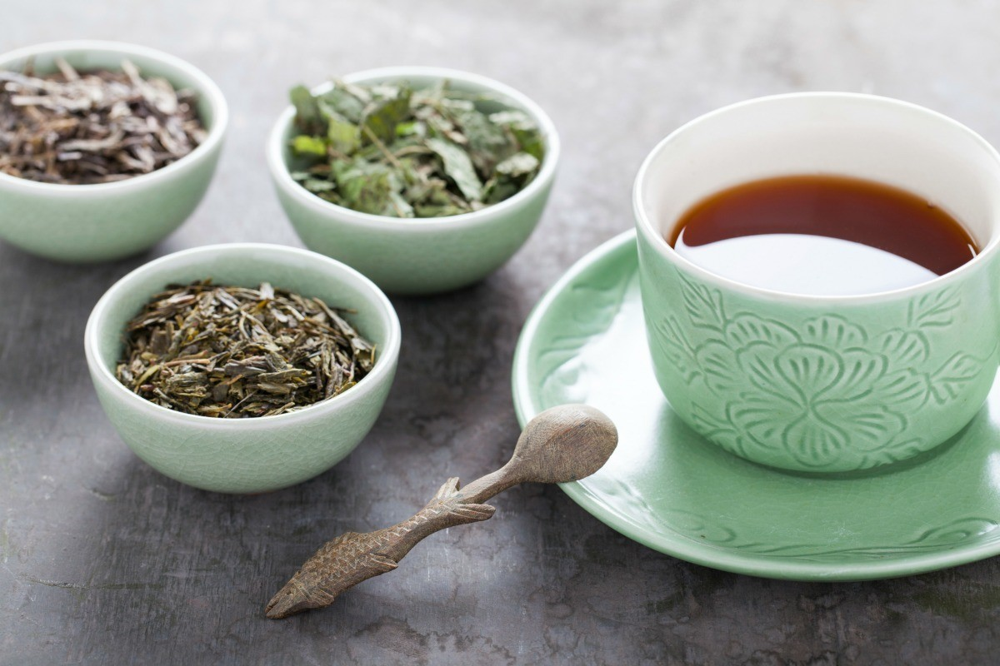
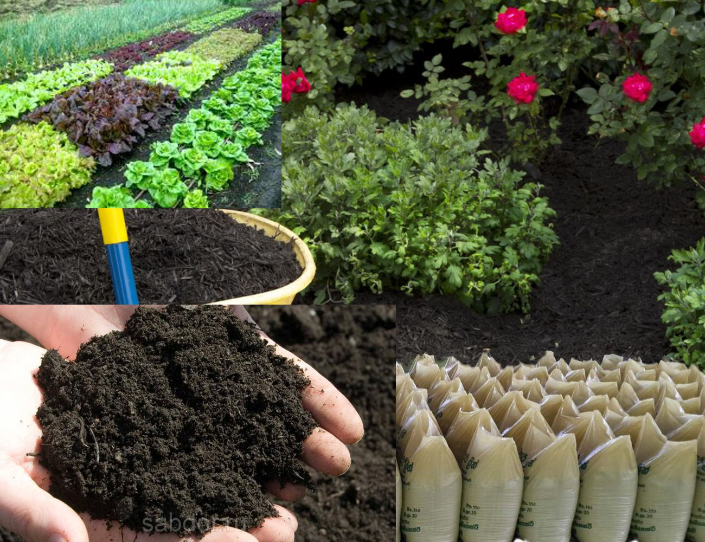

By Products of Tea
Tea Dye
The ceytea factory manufactures the base ingredient for a suite of natural fabric dyes. The brand name for the dyes made of tea is T-Hues. This indicates where it is originated from.
The Process has a waste segregration then it gets filtered and spread- dried to create the base for tea dye in powder form. This can then be transformed to a wide range of 15 colours to suit the textile manufacturers need.
Buy NowManure Fertilizer Tea
Manure tea is a similar in nature to compost tea. it enriches the soil and all the needed nutrients for a plant to grow healty. All the nutrients found in the fertilizer can be disolved in water easily. Manure fertilizers are reuseable with the compost pile.
Just about any plant in your garden or container plantings will benefit from manure tea. Manure tea is a nutrient-rich concoction for your garden that is easy to make and apply. A bit of manure plus some brewing time, and you have a great source of organic nitrogen fertilizer for your gardens and container plantings.
Buy NowTea Tree Oil

Tea tree essential oil is renowned for its powerful, purifying properties. We sustainably hand-harvest our Community Trade organic tea tree leaves within 12 hours, so we can bottle our purest, most potent oil. Our iconic Tea Tree Oil is a cult classic, and is great for on the spot application.
Tea tree skin care range harnesses the cleansing power of natural tea tree and is clinically proven to give clearer skin from one week.
Buy Now